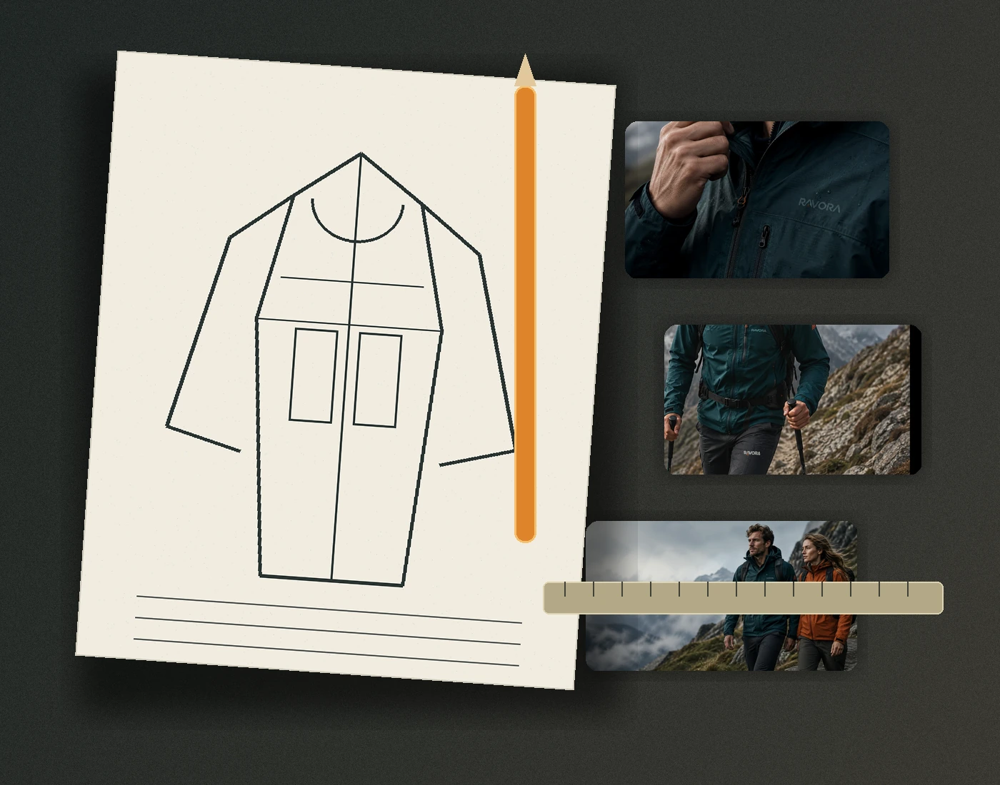
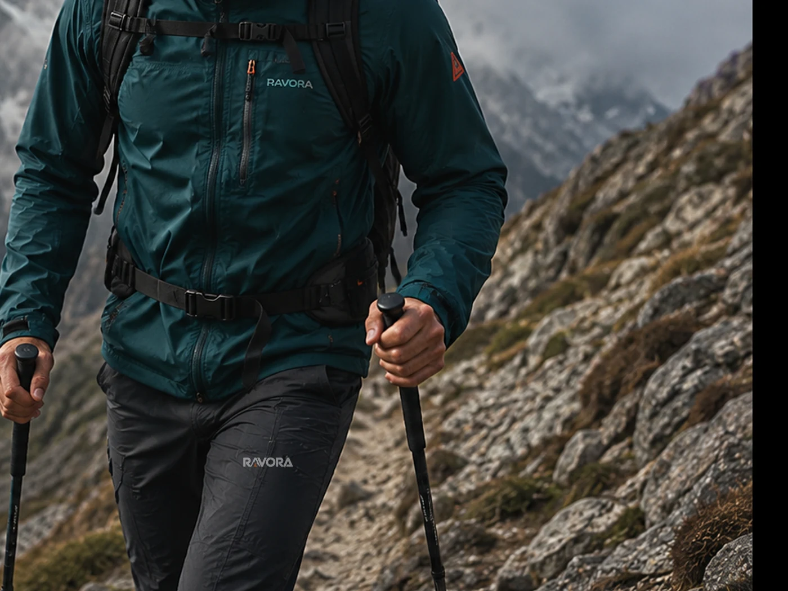

Ergonomik form
Kesim çizgileri ve hareket payları, günlük kullanım ile arazi koşulları arasında dengeli bir hareket alanı oluşturur.
Her çizgi, kesim ve bileşen; hareketi desteklemek, korumayı güçlendirmek ve uzun süreli kullanım sağlamak üzere kurgulanır.

Kesim çizgileri ve hareket payları, günlük kullanım ile arazi koşulları arasında dengeli bir hareket alanı oluşturur.
Koruma, nefes alabilirlik ve konfor; ürünün kullanım amacına göre birbiriyle dengelenir.
Ürün, vücudun doğal hareketine eşlik eder; kullanıcıyı kısıtlayan gereksiz sertlikten kaçınır.
Numune değerlendirmeleri, kritik bileşen kontrolleri ve gerçek kullanım geri bildirimleri tasarım sürecinin parçasıdır.

Kullanım senaryosuna göre koruma, nefes alabilirlik, aşınma dayanımı ve hareket kabiliyeti dengelenir.
Fermuar, iplik ve aksesuar seçimleri yalnızca görünüm değil, uzun süreli kullanım açısından değerlendirilir.
Termal denge hedeflenirken gereksiz hacimden kaçınılır; hafiflik ve konfor korunur.

Rüzgâr, yükseklik ve zorlu zemin gibi değişkenlerde hareket kabiliyeti ve koruma birlikte ele alınır.

Yağışlı ve soğuk günlerde günlük tempoya uyum sağlayan, gösterişten uzak bir görünüm hedeflenir.

Değişken iklimlere hızlı uyum, düşük hacim ve konforlu hareket bir arada düşünülür.
Kumaş, iplik ve yardımcı bileşenlerin kullanım amacına uygunluğu incelenir.
Kesim, ergonomi, erişim noktaları ve hareket alanı ürün üzerinde değerlendirilir.
Ürün, hedeflenen koşulları temsil eden senaryolarda gözlemlenir ve geliştirilir.
Dikiş, fermuar, kritik birleşim noktaları ve genel işçilik son kez kontrol edilir.
Kumaş ve membran yapısına uygun sıcaklık, program ve temizlik ürünü kullanın.
Lokal temizlik ve doğru havalandırma, ürünün yapısını daha uzun süre korur.
Nemli bırakmamak ve uzun süre sıkışık halde tutmamak formun korunmasına yardımcı olur.